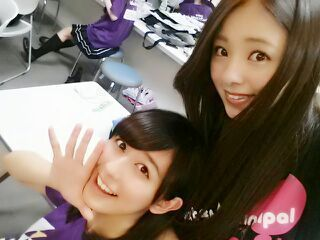

| 2014/06 07 Sat | りぼん。 ろってぃ− |
皆さん 今日も１日お疲れ様です\(#^.^#)/
ぎょろ。 メイクしてないからマスクで顔を隠させてもらってます 笑

そーいえばこないだ、
ひめたん
 にリボンをプレゼントしたんだよね..*
にリボンをプレゼントしたんだよね..*
お店に行ったら可愛いリボンが沢山並んでいて
見てたら買いたくなっちゃって、自分には可愛すぎるからひめたんにあげようと思って、ひめたんにプレゼントしたの !!!
さっそくその日、blogに書いてくれてて嬉しかったよ*^^* ありがとうね。
そーいえば今日...変な夢ばっか見たの(´；ω；｀)
本当こわいね 夢ってさ...笑
夢見てるとき「あ、今自分夢みてるわ。」って分かる人やねんけど、必死に夢から覚めようとしても、今日はなかなか夢から離れることができなくて苦しかった。
今日はいい夢見れます様に...
ちーちゃん大好き..*

れいかれいかれいか... どこ指さしてんねん^ω^
おやすみなさい(#^.^#)
コメント(195)
2014/06/07 00:00